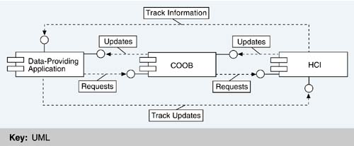

| [ Team LiB ] |
|
15.3 Architectural SolutionWe describe the architecture using three views—the process view so that we can explain how distribution was accomplished; the layered view as a basis for discussing how Ship System 2000 achieves a separation of concerns; and a module decomposition view to show assignment of responsibilities to different large-scale elements of the system, called system functions and system function groups. After presenting the architecture in terms of these three views, we discuss some of the issues that arose at CelsiusTech that are specific to the maintenance and use of a product line. THE PROCESS VIEW: MEETING REQUIREMENTS FOR DISTRIBUTION AND PRODUCT LINE SUPPORTEach CPU runs a set of Ada programs; each Ada program runs on at most one processor. A program may consist of several Ada tasks. Systems in the SS2000 product line can consist of up to 300 Ada programs. The requirement to run on a distributed computing platform has broad implications for the software architecture. First, it necessitates building the system as a set of communicating processes, bringing the process view into play. Having a process view at all means that the performance tactic "introduce concurrency" has been applied. Distributed systems also raise issues of deadlock avoidance, communication protocols, fault tolerance in the case of a failed processor or communications link, network management and saturation avoidance, and performance concerns for coordination among tasks. A number of conventions are used to support the distribution. These respond to the distributed requirements of the architecture as well as its product line aspects. The tasks and intercomponent conventions include the following:
A producer of data does its job without knowing who the consumer of that data is. Data maintenance and update are conceptually separate from data usage. This is an application of the tactic "introduce an intermediary" to achieve modifiability, which the designers accomplished using a blackboard pattern. The main consumer of the data is the HCI component. The component that contains the repository is called the common object manager (COOB). Figure 15.13 illustrates the role of the COOB at runtime. It shows not only the data flow that uses the COOB but also the data flows that bypass the COOB for reasons of performance. Track information (the positional history of a target), carried in a large data structure, is passed directly between producer and consumer, as is trackball information because of its very high update frequency. Figure 15.13. Using (and bypassing) the COOB Data-producing conventions include the following:
Network-related conventions include the following:
Miscellaneous conventions include the following:
Many of these conventions (particularly those regarding abstract data types, IPC, message passing, and data ownership) allow a module to be written independently of many changeable aspects over which it has no control. In other words, the modules are more general and hence more directly usable in different systems. THE LAYERED VIEWThe architecture for SS2000 is layered, as follows:
In SS2000, the bottom layer is known as Base System 2000; it provides an interface between operating system, hardware, and network on the one hand and application programs on the other. To applications programmers, Base System 2000 provides a programming interface with which they can perform intercomponent communication and interaction without being sensitive to the particular underlying computing platforms, network topologies, allocation of functions to processors, and so on. Figure 15.14 illustrates the architectural layers of SS2000. Figure 15.14. SS2000 layered software architectureTHE MODULE DECOMPOSITION VIEW: SYSTEM FUNCTIONS AND SYSTEM FUNCTION GROUPSAs we mentioned in Chapter 2, an organization often has its own terms for the modules it introduces in a module decomposition view. CelsiusTech's modules were called system functions and system function groups. System functions are the primary element of module decomposition in SS2000. A system function is a collection of software that implements a logically connected set of requirements. It is composed of a number of Ada code units. A system function group comprises a set of system functions and forms the basic work assignment for a development team. SS2000 consists of about 30 system function groups, each comprising up to 20 or so system functions. They are clustered around major functional areas, including the following:
Figure 15.15 illustrates the relationship between the various module types. Figure 15.15. Units of software in the module decomposition viewSystem function groups may (and do) contain system functions of more than one layer. They correspond to bigger pieces of functionality that are more appropriately developed by a large team. For example, a separate software requirements specification is written for each system function group. System functions and system function groups, not the Ada code units, are the basic units of test and integration for the product line. This is crucial because it allows a new member of the product line to be treated as the composition of a few dozen high-quality, high-confidence modules that interact in controlled, predictable ways, as opposed to thousands of small units that must be regression-tested with each change. Assembly of large pretested elements was a key to making re-use work at CelsiusTech. APPLYING THE SS2000 ARCHITECTURETable 15.2 summarizes the architectural goals for SS2000 and the approaches and tactics (from Chapter 5) used to achieve them. This section concludes the presentation of the architecture by discussing four important issues that arose in building and maintaining the architecture and in building a family of systems from it.
Architecture as the FoundationAlthough this case study emphasizes that technical solutions in a product line are insufficient without taking into account business and organizational issues as well, it remains a fact that the SS2000 architecture was the means for achieving a product line. Toward this end, abstraction and layering were vital. Abstraction allowed creation of modules that encapsulated changeable decisions within the boundaries of their interfaces. When a module is used in multiple products, the changeable decisions are instantiated whenever possible by parameterization. When the modules change across time as new requirements are accommodated, the changeable decisions held inside the module ensure that wholesale changes to the asset base are not needed. The size and complexity of this architecture and the modules that populate it make clear that a thorough understanding of the application domain is required if a system is to be partitioned into modules that can be developed independently, are appropriate for a product line whose products are as widely varied as those in SS2000, and can accommodate evolution with ease. Maintaining the Asset Base as New Systems Are ProducedAs we discussed, the enduring product at CelsiusTech is not an individual ship for a specific customer, or even the set of systems deployed so far. Rather, the central task is viewed as maintaing the product line itself. Maintaining the product line means maintaining the re-usable assets in such a way that any previous member of the product line can be regenerated (they change and evolve and grow, after all, as their requirements change) and future members can be built. In a sense, maintaining the product line means maintaining a capability, the capability to produce products from the assets. Maintaining this capability means keeping re-usable modules up to date and general. No product is allowed to evolve in isolation from the product line. This is one approach to solving the problem, which we identified in Chapter 14, of keeping the evolution of the product line synchronized with the evolution of the variants. Not every module is used in every member of the product line. Cryptologic and human interface requirements differ so widely across nationalities, for instance, that it makes more sense to build modules that are used in a few systems than to attempt a more general solution. In a sense, this yields product lines within the major product line: a Swedish set of products, a Danish set of products, and so on. Some modules are used only once but even these are maintained as product line assets, designed and built to be configurable and flexible, in case a new product is developed that can make use of them. Externally, CelsiusTech builds ship systems. Internally, they evolve and grow a common asset base that provides the capability to turn out ship systems. This mentality—which is what it is—might sound subtle, but it manifests itself in the configuration control policies, the organization of the enterprise, and the way that new products are marketed. Maintaining Large Pre-integrated ChunksIn the classic literature on software re-use repositories, the unit of re-use is typically either a small fine-grained module (such as an Ada package, a subroutine, or an object) or a large-scale independently executing subsystem (such as a tool or a commercial standalone product). In the former case, the small modules must be assembled, integrated, configured, and tested after checking out; in the latter case, the subsystems are typically not very configurable or flexible. CelsiusTech took an intermediate approach. Their unit of re-use is a system function, a thread of related functionality that comprises modules from different layers in the architecture. System functions are pre-integrated—that is, the modules they comprise have been assembled, compiled together, tested individually, and tested as a unit. When the system function is checked out of the asset repository, it is ready for use. In this way, CelsiusTech is not only re-using modules but also re-using the integration and test effort that would otherwise have to be repeated for each application. Parameterized modulesAlthough modules are re-used with no change in code in most cases, they are not always re-used entirely without change. Many of the elements are written with symbolic values in place of absolute quantities that may change from system to system. For example, a computation within some module may be a function of how many processors there are; however, that number need not be known when the module is written; therefore, the module may be written with the number of processors as a symbolic value—a parameter—the value of which is bound as the system is integrated. The module works correctly at runtime but can be used without code change in another version of the system that features a different number of processors. Parameters are a simple, effective, and time-honored means to achieve module re-use. However, in practice they tend to multiply at an alarming rate. Almost any module can be made more general via parameterization. The modules for SS2000 feature 3,000 to 5,000 parameters that must be individually tuned for each customer system built from the product line. CelsiusTech had no way to tell that a certain combination of parameter values, when instantiated into a running system, would not lead to some sort of illegal operating state. The fact that there were so many parameters undermined some of the benefits gained from treating large system functions and system function groups as the basic units of test and integration. As parameters are tuned for a new version of the system, they in fact produce a version that has never been tested. Moreover, each combination of parameter values may theoretically take the system into operating states that have never been experienced, let alone exhaustively tested. Only a small proportion of the possible parameter combinations will ever occur. However, there is a danger that unwillingness to "try out" a new parameter combination could inhibit exploiting the built-in flexibility (configurability) of the elements. In practice, the multitude of parameters seems to be mostly a bookkeeping worry; there has never been any incorrect operation that could be traced back solely to a set of parameter specifications. Often, a large module is imported with its parameter set unchanged from its previous utilization. |
| [ Team LiB ] |
|